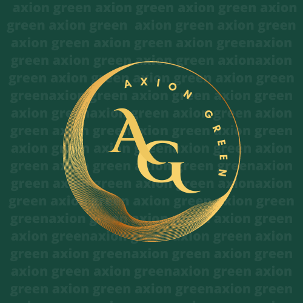

introdução e apresentação de nosso produto
A certificação de qualidade garante que o dispositivo atenda a padrões e normas estabelecidas, como a ISO 9001 mais especificamente espelhando a FSC que é responsável pela sustentabilidade e a IEC 61508, e que ele foi testado e avaliado quanto à segurança e desempenho. Isso traz diversos benefícios, como aumento da confiança do cliente e redução de riscos de falhas ou acidentes.
Um problema específico que pode ser solucionado com o uso de dispositivos Arduino é a falta de controle e monitoramento de gases expelidos pelas indústrias. Podemos utilizá-lo para reduzir a emissão destes gases conscientizando as empresas e clientes finais destas a qual estaria contribuindo para um futuro mais verde
A solução proposta com o uso de dispositivos Arduino traz diversos impactos positivos, como aumento da produtividade, redução de custos e riscos, e melhoria na qualidade dos produtos e processos. Além disso, a utilização de tecnologias sustentáveis e eficientes contribui para a preservação do meio ambiente.
No entanto, é importante considerar os possíveis impactos negativos da implementação dessas soluções, como a necessidade de treinamento e capacitação de pessoal para operar e instalar esses dispositivos ao redor das empresas, além de possíveis problemas de compatibilidade com sistemas já existentes
Para minimizar esses impactos e garantir o sucesso da implementação da solução, é importante realizar um estudo prévio das necessidades e possibilidades do cliente, além de investir em treinamentos e suporte técnico. Também é importante estar atento às atualizações e evoluções tecnológicas para garantir a eficiência e competitividade do dispositivo no mercado
Selo de certificação
